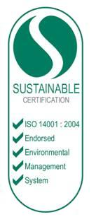

Environmental Management System
As part of our ISO14001 accreditation and our overall commitment to the environment, we aim to:
- reduce our consumption of energy, water and other material resources
- reduce and control pollution and emissions
- manage waste generated from our business operations
- encourage employees to become actively involved in environmental matters
- monitor and audit environmental performance in order to achieve continuous improvement.
Our initiatives are developed and implemented by the Environmental Management Review team and Pearson's Green Champions from across the business.
We all retain a degree of responsibility for ensuring protection of environmental values and meeting our environmental targets. In order to discharge our legal obligations under PAG's environmental management system, employees must take all reasonable steps to protect the environment.